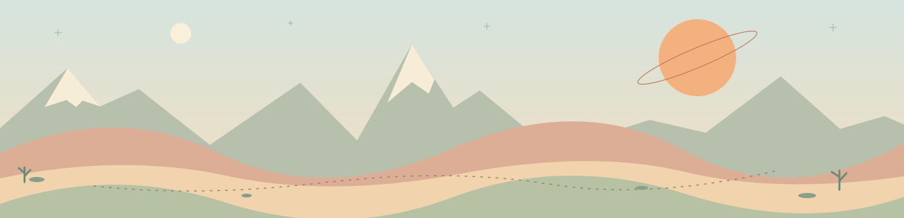

YOUR NEXT CHAPTER IS A WHOLE NEW WORLD
Wish you lived here?
Unspoilt horizons. Room to grow. Neighbours with character.
Your forever getaway is just four little steps away.
ONE-WAY ESCAPEStay for
the future.★ A UNIVERSE OF POSSIBILITY ★
the future.★ A UNIVERSE OF POSSIBILITY ★
GREETINGS FROM YOUR NEXT HOMEEXCELLENT VIEWS. MINIMAL PAPERWORK.

01 ARRIVALS / NO QUEUE
ARRIVALS / NO QUEUE
ARRIVALS / NO QUEUE02 A PLACE TO CALL HOME
A PLACE TO CALL HOME
A PLACE TO CALL HOME03
 THE WELCOMING COMMITTEE
THE WELCOMING COMMITTEE
THE WELCOMING COMMITTEE04
 BRIGHTER THINGS AHEAD
BRIGHTER THINGS AHEAD
BRIGHTER THINGS AHEAD- 01 / CHECK IN
Land somewhere lovely.
Set down your SH02. Unpack ISAO. Take in the view. You’re home already.
- 02 / MAKE IT YOURS
A little home improvement.
Ship scraps → factory → power. Let Stålheart build the dream. Start with somewhere for the kettle.
- 03 / MEET THE NEIGHBOURS
Wave. Then play it by ear.
Alien threats? MÖRK, the KORP Gunship and sentries can help. Friendly locals? Even better.
- 04 / STAY CONNECTED
All-inclusive star power.*
Build the ARC-01 launcher. Send up satellites, with SOL on watch. Next stop: a Dyson-sphere connection.
*Collect at the star. Send power home. Dyson connection: future story concept. Models by jelaludo.Your full relocation guide ↗